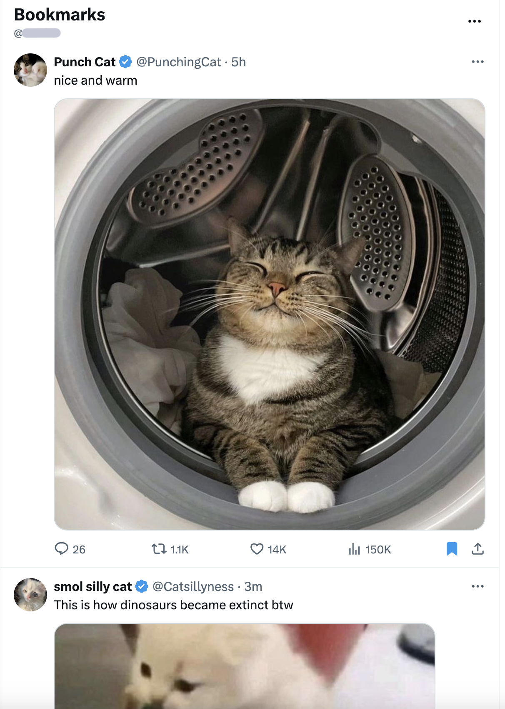
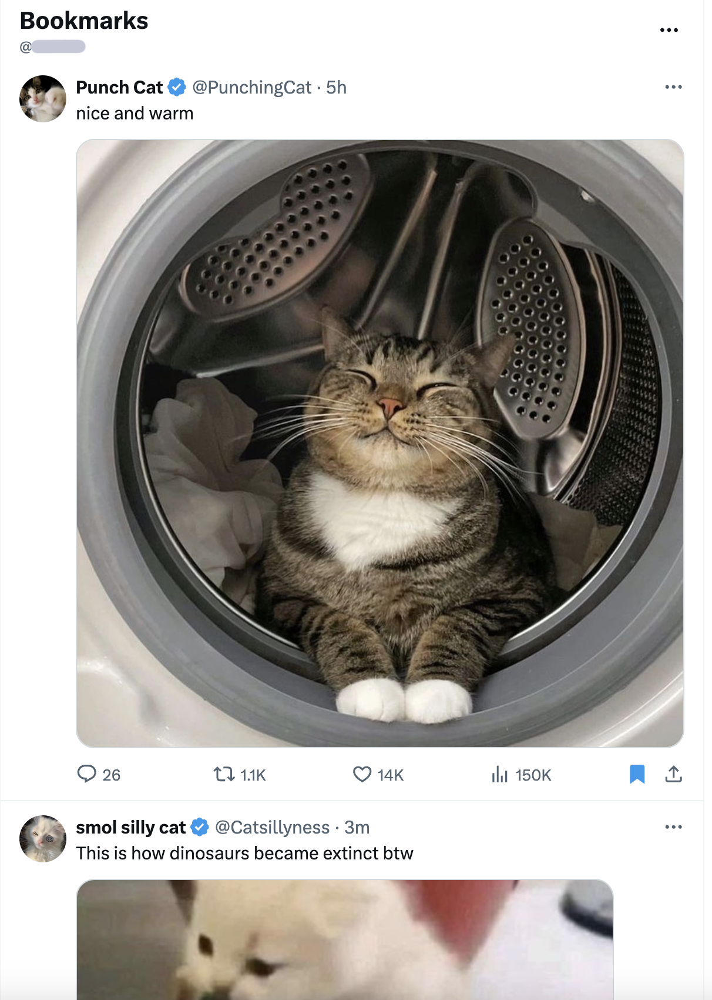
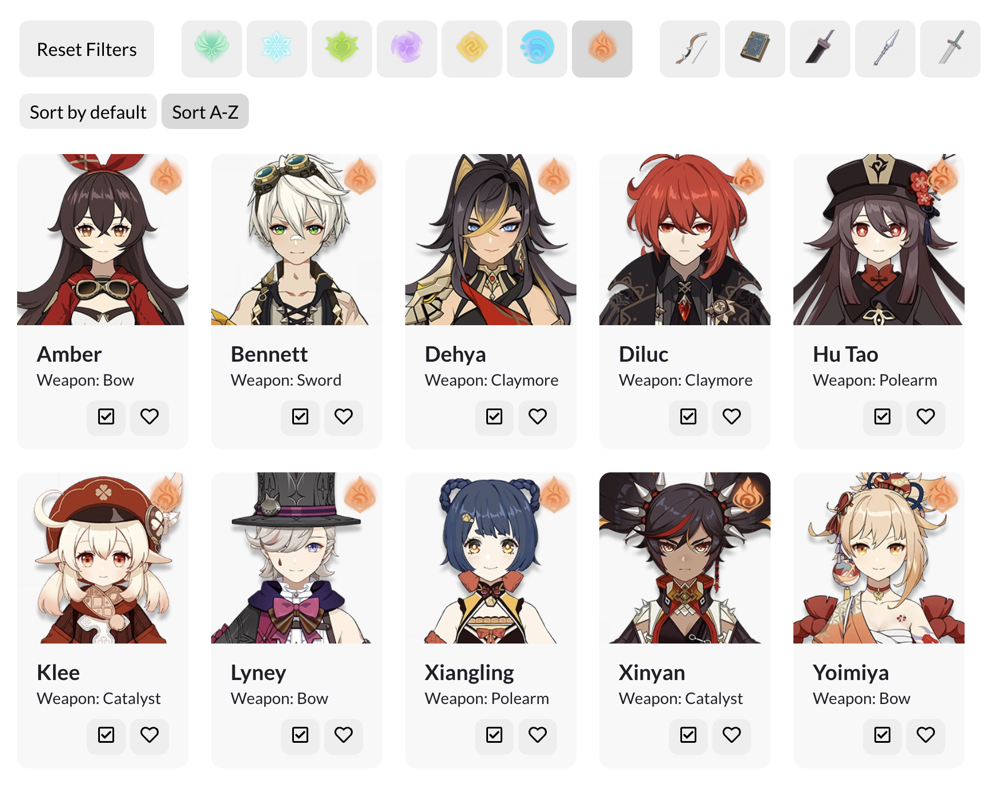
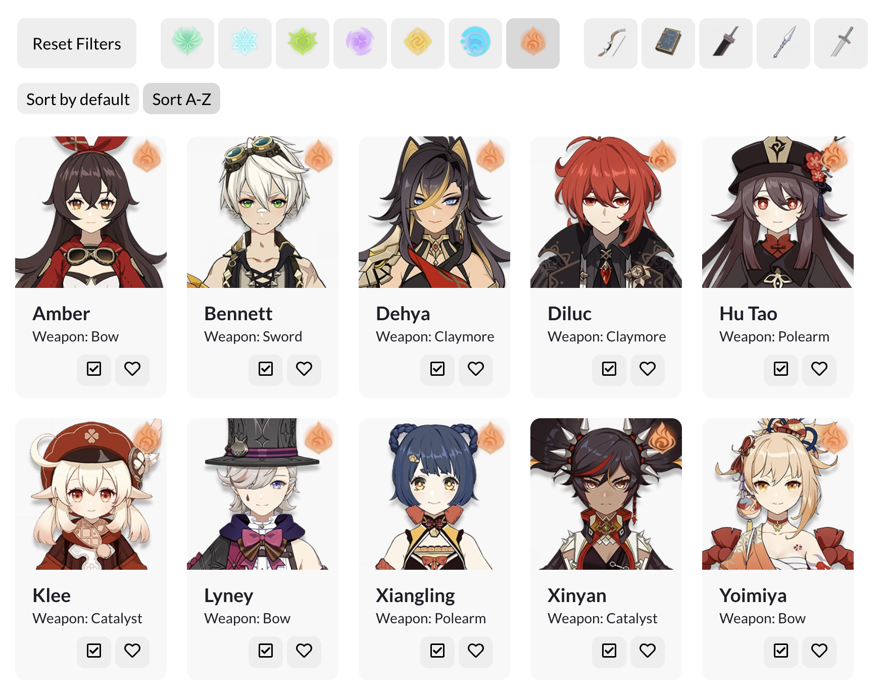

In this class project, I was tasked with making an aggregator website--a website where users can select items out of a list and curate their own collection (think Amazon shopping cart or Pinterest pins). As a huge Genshin Impact fan, I immediately knew I wanted to make a website for keeping track of characters you have and want in the game! Here is the link.
To start, I analyzed the aggregation features of three existing websites and compared them.
Competitive Analysis: Balancing convenience and curation

 

I chose three websites with aggregation features: Codibook (a Korean fashion retail website), Pinterest, and Twitter. To compare them, I made the following comparison chart:

In the competitive analysis, I noticed that each website had features that were streamlined for their purpose, resulting in pitfalls in other areas. For example, while Pinterest has a robust categorization system where users can curate boards with topics of their choice, users aren't able to like something quickly in one click--they have to choose a specific board to add it to. On the other hand, it's extremely easy to like a clothing item on Codibook since there is only one favorites list. This encourages users to like more items out of convenience, which is fitting for a clothing retail site--users will be more likely to buy items if it's very easy to save and view clothes that they like. The tradeoff is less customizability.


I additionally noticed that a grid view was more effective than a list view in displaying likes--as an example, it was difficult to scroll through the list of likes on Twitter.
Finally, I noticed that Twitter has a feature where you can save something at varying degrees of importance: it has both a normal "like" and a "bookmark," which implies more importance than a like. I felt that this feature struck a balance between convenience and curation.
Overall, the features I felt were most important were the ability to quickly like and unlike in one click and having a grid view, while less relevant features (depending on the purpose of the website) included having a counter for the total number of likes.
Implementing with React
Based on my competitive analysis, I wanted to implement the following:
- Some degree of user customization (whether this is a simple likes vs. bookmarks or a more robust categorization system)
- Sorting likes
- Grid view with images
- Like in one click
- Delete in one click
I also noted that in all the websites I chose, the aggregator section was a separate page from the browsing section. In my app, they were on the same page.
Following my goal of making a Genshin Impact wishlist website, I included two categories of likes: a wishlist and a list of characters the user already owns. Users can either click the heart or the checkbox on a character to add them to the respective list. You cannot add the same character to a list twice.
For my filtering and sorting functionality, I allowed the user to filter the list of characters by element type (all characters have an element) and weapon type. Users can sort the list alphabetically or by default, which will put 5-star characters first and 4-star characters later. The filters and sorts can be combined for more fine-grained searching. All buttons are toggle-able (i.e., you can reset a filter by clicking on an active button again).
 

Final Thoughts: Adding more flair
Looking back, I would've liked to experiment with more unique styling and CSS. While all the functionality is there, the website isn't too visually interesting or unique. I'd love to make it Genshin-themed!
Some extra features I'd like to add include highlighting the heart and checkbox icons on character cards to show that they've already been added to the wishlist/owned list, as well as more filtering options (sorting by rarity).
I hope you enjoyed reading about my project!